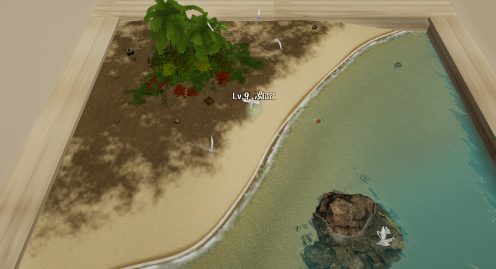

Home / Games / Creature Fishing
172 fish, one slime, and a very small islandCreature Fishing

Read the guide below, or load the game when you are ready.
There is a small island floating inside a wooden crate, and standing on it is a slime holding a fishing rod. That is the whole setup. You cast a line into the water and wait, and eventually something comes up.
What comes up is the interesting part. There are 172 species in the game. Most are real animals, some I invented, and nineteen of them should not exist. You can be reeling in a bluefin tuna one minute and a Deep One the next.
The first load is large, so give it a moment before you decide it is broken.
At a Glance
| Genre | Fishing, collection, tiny sandbox |
|---|---|
| Price | Free, no install, no account |
| Platform | Desktop (Chrome / Edge / Firefox / Safari) and mobile |
| Saves | Auto-saved in your browser |
| Fish | 172 species (102 real, 51 invented, 19 mythological) |
| Online | 6 public islands, up to 12 players each, with chat |
| Languages | English and Japanese, switchable in game |
How to Play
- Cast: hold the spacebar, or tap the slime on mobile. The line flies out into the water
- Wait: this part is not optional. Take your hands off the keys
- Reel: when you feel the bite, mash the spacebar (or tap repeatedly). The rod comes up and the fish is yours
- Repeat: fill in the index one species at a time
That really is all of it. Everything else in the game is somewhere to walk to.
If you keep getting bites but never landing anything
You are mashing too early. Pressing before the bite registers just pulls an empty line back up. The waiting is the mechanic, not dead time between the good parts, so cast and then genuinely stop touching the controls.
The opposite mistake costs you too. Once the hit lands, hesitation loses the fish. How fast you mash from that moment is more or less your catch rate.
Controls
| Cast / reel in | Spacebar, or click and tap the slime |
|---|---|
| Walk | WASD, arrow keys, or click the ground |
| Open the menu | Click the brown bait box on the beach |
| Fish index | Bait box, then the index |
| Set your name | Bait box, then profile |
| Go to a shared island | Bait box, then the shared islands |
| Chat | Enter, or the talk button |
| Close chat | Escape, or click the game screen |
The Fish Index
Everything you catch is recorded. Species you have not caught stay hidden, so the index doubles as a list of what is still out there.
| Common | 102 species. Real fish and sea creatures, from red sea bream and rainbow trout up to the blue whale, the giant isopod and the oarfish. A few prehistoric ones too, like Xiphactinus and the belemnite |
|---|---|
| Fantasy | 51 species. Invented for this game. Moon-Lantern Fish, Emberglass Koi, Nullwater Catfish, a juvenile rift leviathan |
| Mythos | 19 species. Eleven from the Cthulhu Mythos and eight from sea folklore around the world |
The nineteen that should not be in a fishing game
This is the part I spent the most time on. From the Cthulhu Mythos: the Deep One, the Great Race of Yith, Glaaki, Shaggai, Mordiggian, the Hunting Horror, the Shapeless Spawn, the Black Young. From folklore: Akkorokamui from Ainu tradition, the Bake Kujira and the Ningyo from Japan, the Kraken from Norse myth, the Hippocampus and Cetus from Greece, the Selkie from Celtic legend, and the Melusine Eel from France.
The whole reason they are in here is the moment where you are quietly working through the tuna and something ancient takes the hook instead.
Playing With Other People
Open the bait box and choose the shared islands. There are six public ones and each holds up to twelve people.
It is not competitive and it is not co-op. Several people are simply fishing in the same water, each doing their own thing, and you can see the moment someone lands a catch. That sounds like very little. In practice it changes the feel of an evening more than I expected it to.
There is a chat on Enter. Please do not put real names, addresses or contact details in it, because strangers can read it.
Developer's Note
This game shipped with thirteen fish, not 172.
The reason was memory. Every species you add is more data the browser has to hold, and past a certain point the whole thing gets sluggish in a way no amount of pretty art makes up for. Getting from thirteen to 172 was not a content problem, it was a rendering problem, and most of that work was rewriting how fish get drawn so that adding another one stopped being expensive.
I am still adding them. The index is built to keep growing.
How the fish count grew from 13 to 172 is told in the dev log.
FAQ
- Is it really free?
- Yes. No install, no account. Open the page and fish.
- I get a bite but never catch anything.
- You are mashing before the bite lands, which just pulls the line up empty. Cast, wait with your hands off the controls, and mash only once you feel the hit.
- Can I play on a phone?
- Yes. Landscape is much better, and the first load is big enough that Wi-Fi is worth it.
- How many fish are there?
- 172 right now: 102 real, 51 invented, 19 from myth and folklore. More are still coming.
- Can my save data be lost?
- Progress is stored in your browser, so clearing site data can erase it, and private browsing may discard it when the session ends. There is no transfer between devices.